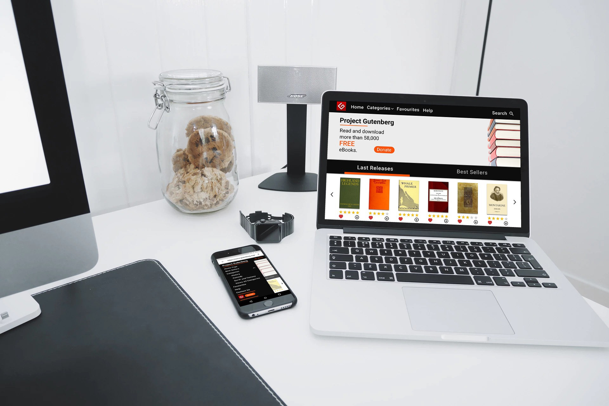
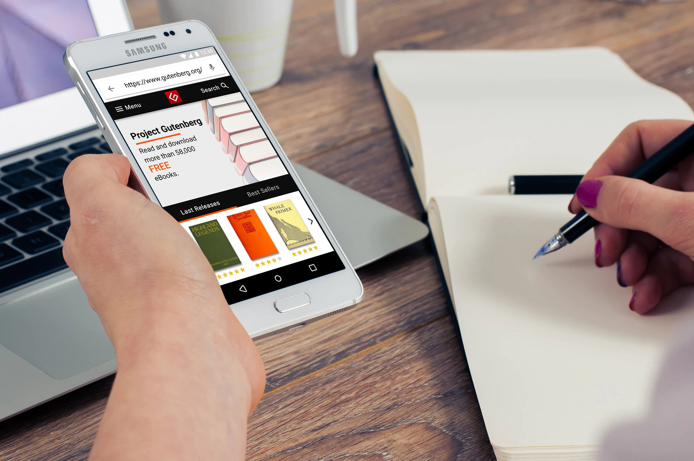

What I do
My name is Gencho Apostolov and I am a freelance designer and front end developer.
I use HTML5, CSS3 and JS to make things look pretty and function well.
As an example of my work, here you can see my redesign of the Free Ebook website Project Gutenberg with several responsive design mockups. Figma, Adobe Photoshop and Adobe Illustrator were used in the development process.
 